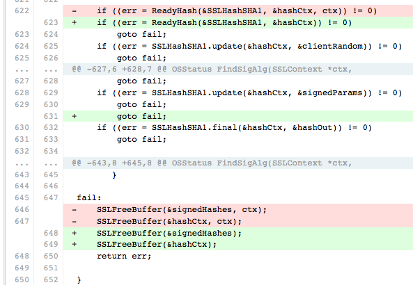
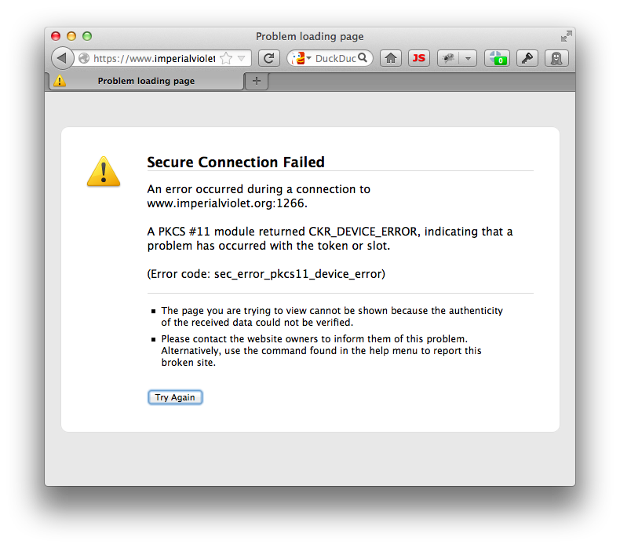
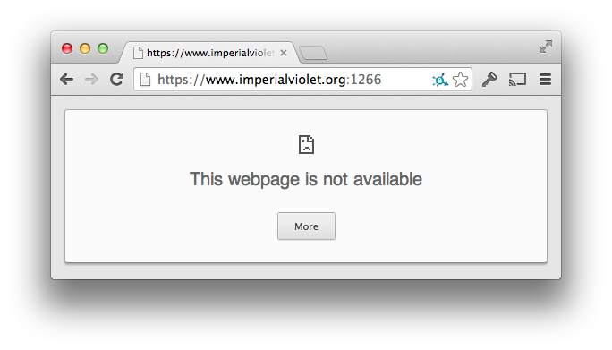
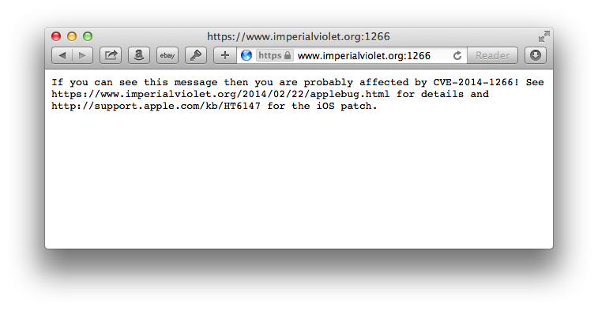
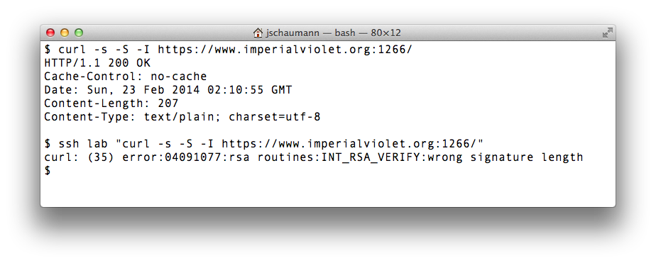

Aspects of System Administration
Automation and Scripting
https://www.cs.stevens.edu/~jschauma/615/
jschauma@stevens.edu
Current Events: CVE-2014-1266
Current Events: CVE-2014-1266
NIST has (a few) more details:
The SSLVerifySignedServerKeyExchange function in libsecurity_ssl/lib/sslKeyExchange.c in the Secure Transport feature in the Data Security component in Apple iOS 6.x before 6.1.6 and 7.x before 7.0.6, Apple TV 6.x before 6.0.2, and Apple OS X 10.9.x before 10.9.2 does not check the signature in a TLS Server Key Exchange message, which allows man-in-the-middle attackers to spoof SSL servers by (1) using an arbitrary private key for the signing step or (2) omitting the signing step.
Current Events: CVE-2014-1266
Adam Langley has more details:
https://www.imperialviolet.org/2014/02/22/applebug.html
Current Events: CVE-2014-1266
And here's the code diff:
https://gist.github.com/alexyakoubian/9151610/revisions
Current Events: CVE-2014-1266
Current Events: CVE-2014-1266
So let's try this...
Current Events: CVE-2014-1266
Current Events: CVE-2014-1266
Current Events: CVE-2014-1266
Current Events: CVE-2014-1266
Current Events: CVE-2014-1266
Automation
What kind of things do we automate?
- software installation / upgrades / audits
- account creation / deletion
- system configuration changes
- log and event processing
...and anything / everything else in between!
Why automate anything?
- we're lazy
- we're unreliable
- we're forgetful
Computers... are none of those things.
Who do we automate things for?
- ourselves
- our peers
- our users
- anybody else
Tools

Tools
Tools

Tools

The right tool for the job?
Bourne shell (/bin/sh)
- lowest common denominator
- available and reliable on most platforms (but beware of non-portable bash(1) "enhancements")
- beware of "quick-and-dirty" solutions, they grow to become unmaintainable
- treat shell as any other programming language:
- use functions
- use suitably scoped variables
- follow Unix philosophy
- properly package your tool
The right tool for the job?
Perl, Python, Ruby, ...
- suitable for moderately complex tasks
- move to these when sed(1), awk(1), etc. become too cumbersome
- text manipulation frequently easier
- beware of "quick-and-dirty" solutions, they grow to become unmaintainable
- try to build self-contained modules that can be tested independent of the “main” program
- wealth of libraries available -- use them! (And remember to explicitly require them.)
- properly package your tool
The right tool for the job?
Perl, PHP, Tcl, JavaScript, CoffeeScript, ...
- http/web server interfaces
- CGI "scripts" / server-side execution (via, for example, NodeJS in the case of JavaScript)
- interface with/utilize APIs in a specific domain/vendor products
- frequent cause of all sorts of security problems due to interface with user data / exposure on the internet
The right tool for the job?
Java, Scala, Clojure, Rhino...
- know your primary applications
- interface with / extend / tie into JVM
The right tool for the job?
C, C++, Go, ...
- performance benefits
- portability
- sufficient low-levelness
- systems understanding
- fix/patch your other tools / the system
Development Cycle

https://xkcd.com/303/
Interpreted Languages
General advantages:
- short development cycle
- normally facilitate things like string manipulation, arithmetic and more complex regular expressions
- easily handle multiple file handles and other I/O
- some security features
- tens of thousands of special- and general-purpose modules available
Interpreted Languages
General disadvantages:
- no one tool fits all purposes
- tens of thousands of special- and general-purpose modules available => lots of duplication, stale code, questionable quality
- security features frequently neglected or circumvented ("too hard" or more precisely "inconvenient")
- everybody has their particular favorite (and dislikes one or the other)
- interpreter not (necessarily) universally available / installed
Three basic categories:
- scripting
- programming
- software development
Scripting
Scripting
- automating very simple tasks
- customization of user environment
- often only suitable for one individual user
- usually eventually evolves into larger programs
Programming

Programming
- suitable for simple to moderately complex tasks
- results frequently used by a small base of users
- uses basic framework or common toolkits
- provides consistent interface
- may evolve into full product
Software / Product Development
Software / Product Development
- required for any reasonably complex task
- uses formal software engineering approach (measurable goals, requirements, specifications, ...)
- may evolve from previous prototypes
- requires ongoing continous maintenance / development efforts
Make sure to understand:
- motivation / goals
- target audience
- scope
- dependencies
Hammer Time!
Hammer Time!
http://dumps.wikimedia.org/other/pagecounts-raw/
$ ssh linux-lab.cs.stevens.edu $ du -h ~jschauma/public_html/615/pagecounts-20140201-000000.gz 92M /home/jschauma/public_html/615/pagecounts-20140201-000000.gz $
Hammer Time!
How many unique objects were requested in that hour in total?
For en only:
- How many unique objects were requested?
- Which is the most often requested object?
- How many requests in total?
- How much data was transferred in total?
- Which was the largest object requested?
Hammer Time!
What is the longest word found on the ten most frequently retrieved pages?
How many unique objects were requested?
$ FILE=/home/jschauma/public_html/615/pagecounts-20140201-000000.gz
$ zcat ${FILE} | wc -l
How many unique objects were requested for en only?
$ gzip -d ${FILE} > pagecounts
$ grep "^en " ${FILE} | tee en | wc -l
Which is the most often requested object for en?
$ sort -k3 -n en | tail -1
How many requests where there in total for en?
$ awk '{ sum=sum+$(NF-1); }; END { print sum; }' en
How much data was transferred in total for en?
$ echo $(( $(awk '{ sum=sum+$NF; }; END { print sum; }' en)/1024/1024/1024 ))
Which was the largets object in en?
$ awk '{ s=$NF/$(NF-1); if (s>l) { l=s; n=$0; }}; END { print n; }' en
What is the longest word found on the ten most frequently retrieved pages?
$ for f in $(cat en | sort -k3 -n | tail -10 |
sed -e ’s/en \(.*\) [0-9]* [0-9]*/\1/’); do
links -dump http://en.wikipedia.org/wiki/${f}
done |
tr '[:space:]' '\n' |
tr '[:upper:]' '[:lower:]' |
egrep '^[a-z]+$' |
awk '{ print length() " " $0; }' |
sort -n |
tail -1
Shell Essentials
- pipes
- ls(1), find(1)
- grep(1), awk(1), sed(1)
- tr(1)
- sort(1)
- regular expressions
- ssh(1)/scp(1)
- wc(1)
- expect(1)
HW#3: ifconfig output parsing